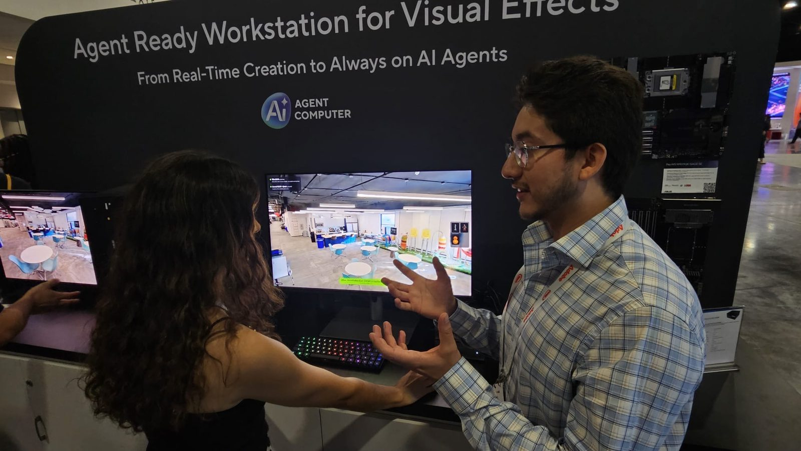
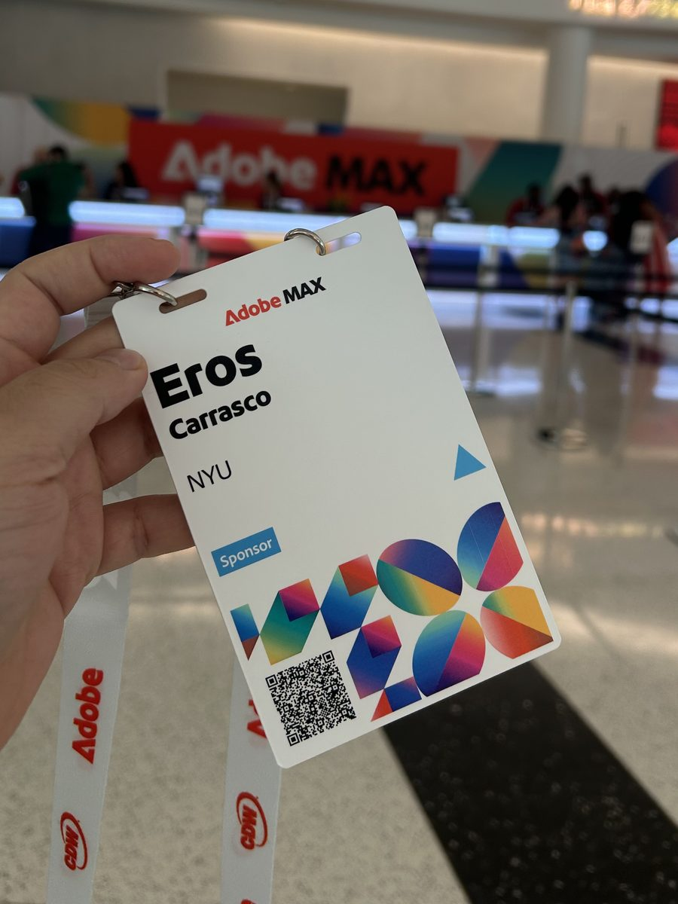

A breakroom taken apart by my engine. Drag a table, an island, a bin or a stool across the floor, clear the whole room and see what was behind, or turn on a light and carry it through the room.
Drag furniture to move it Drag to turn Scroll to zoom Pinch to zoom
I went with ASUS to their ProArt booth at Adobe MAX 2026 in Miami to show this research live, and scanned the booth during the show with an XGRIDS PortalCam.
Drag to turn Scroll to zoom Pinch to zoom

